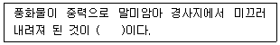
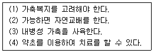
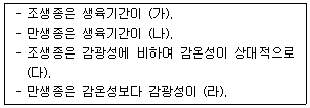

유기농업기능사 (2016-01-24 기출문제)
1과목: 작물재배
1. 비료를 만들어진 원료에 따라 분류한 것이다. 다음 중 틀린 것은?
- 식물성 비료 : 퇴비, 구비
- 무기질 비료 : 요소, 염화칼륨
- 동물성 비료 : 어분, 골분
- 인산질 비료 : 유안, 초안
(정답률: 72%)

2. 토양의 노후답의 특징이 아닌 것은?
- 작토 환원층에서 칼슘이 많을 때에는 벼뿌리가 적갈색인 산화칼슘의 두꺼운 피막을 형성한다.
- Fe, Mn, K, Ca, Mg, Si, P 등이 작토에서 용탈되어 결핍된 논토양이다.
- 담수 하의 작토의 환원층에서 철분, 망간이 환원되어 녹기 쉬운 형태로 된다.
- 담수 하의 작토의 환원층에서 황산염이 환원되어 황화수소가 생성된다.
(정답률: 53%)
3. 진딧물 피해를 입고 있는 고추밭에 꽃등에를 이용해서 방제하는 방법은?
- 경종적 방제법
- 물리적 방제법
- 화학적 방제법
- 생물학적 방제법
(정답률: 89%)
4. 재배식물의 기원을 식물종의 유전자중심설로 구명한 학자는?
- De Candolle
- Liebig
- Mendel
- Vavilov
(정답률: 80%)
5. 오존(O3) 발생의 가장 큰 원인이 되는 물질은?
- CO2
- HF
- NO2
- SO2
(정답률: 59%)
6. 작물의 내습성에 관여하는 요인에 대한 설명으로 틀린 것은?
- 근계가 얕게 발달하거나, 습해를 받았을 때 부정근의 발생력이 큰 것은 내습성이 약하다.
- 뿌리조직이 목화한 것은 환원성 유해물질의 침입을 막아서 내습성을 강하게 한다.
- 벼는 밭작물인 보리에 비해 잎, 줄기, 뿌리에 통기계가 발달하여 담수조건에서도 뿌리로의 산소공급능력이 뛰어나다.
- 뿌리가 황화수소, 아산화철 등에 대하여 저항성이 큰 것은 내습성이 강하다.
(정답률: 52%)
7. 다음 중 작물의 기원지가 중국인 것은?
- 쑥갓
- 호박
- 가지
- 순무
(정답률: 80%)
8. 식물의 화성유도에 있어서 주요 요인이 아닌 것은?
- 식물호르몬
- 영양상태
- 수분
- 광
(정답률: 52%)
9. 작물생육 필수원소에 해당하는 것은?
- Al
- Zn
- Na
- Co
(정답률: 63%)
10. 다음 중 도복방지에 효과적인 원소는?
- 질소
- 마그네슘
- 인
- 아연
(정답률: 63%)
11. 토양의 3상과 거리가 먼 것은?
- 토양입자
- 물
- 공기
- 미생물
(정답률: 81%)
12. 작물의 내동성에 대한 생리적인 요인으로 옳은 것은?
- 원형질의 수분투과성이 큰 것이 내동성을 감소시킨다.
- 원형질의 친수성 클로이드가 많으면 내동성이 감소한다.
- 전분함량이 많으면 내동성이 증대한다.
- 원형질단백질에 –SH기가 많은 것은 –SS기가 많은 것보다 내동성이 높다.
(정답률: 67%)
13. 재배환경에 따른 이산화탄소의 농도 분포에 관한 설명으로 틀린 것은?
- 식생이 무성한 곳의 이산화탄소 농도는 여름보다 겨울이 높다.
- 식생이 무성하면 지표면이 상층면보다 낮다.
- 미숙 유기물시용으로 탄소농도는 증가한다.
- 식생이 무성한 지표에서 떨어진 공기층은 이산화탄소 농도가 낮아진다.
(정답률: 48%)
14. 토양 중 유기물 시용 시 질소기아현상이 가장 많이 나타날 수 있는 조건은?
- 탄질률 1~5
- 탄질률 5~10
- 탄질률 10~20
- 탄질률 30이상
(정답률: 71%)
15. 도복의 유발요인으로 거리가 먼 것은?
- 밀식
- 품종
- 병충해
- 배수
(정답률: 64%)
16. 다음 중 밭에서 한해를 줄일 수 있는 재배적 방법으로 틀린 것은?
- 뿌림골을 높게 한다.
- 재식밀도를 성기게 한다.
- 질소를 적게 준다.
- 내건성 품종을 재배한다.
(정답률: 58%)
17. 대기의 주요 성분 중 농도가 5~10% 이하 또는 90% 이상이면 호흡에 지장을 초래하는 성분은?
- N2
- O2
- CO
- CO2
(정답률: 65%)
18. 토양의 유효수분 범위로 옳은 것은?
- 포장용수량 ~ 초기위조점
- 포장용수량 ~ 영구위조점
- 최대용수량 ~ 초기위조점
- 최대용수량 ~ 영구위조점
(정답률: 67%)
19. 작물의 생존연한에 따른 분류로 틀린 것은?
- 1년생작물
- 2년생작물
- 월년생작물
- 3년생작물
(정답률: 75%)
20. 배수의 효과로 틀린 것은?
- 습해와 수해를 방지한다.
- 토양의 성질을 개선하여 작물의 생육을 촉진한다.
- 경지 이용도를 낮게 한다.
- 농작업을 용이하게 하고, 기계화를 촉진한다.
(정답률: 82%)
2과목: 토양관리
21. 토양침식에 가장 큰 영향을 끼치는 인자는?
- 강우
- 온도
- 눈
- 바람
(정답률: 88%)
22. 개간지 미숙 밭토양의 개량 방법과 가장 거리가 먼 것은?
- 유기물 증시
- 석회 증시
- 인산 증시
- 철, 아연 증시
(정답률: 68%)
23. 다음 중 다면체를 이루고 그 각도는 비교적 둥글며, 밭 토양과 산림의 하층토에 많이 분포하는 토양구조는?
- 입상
- 괴상
- 과립상
- 판상
(정답률: 64%)
24. 토양 내 세균에 대한 설명으로 틀린 것은?
- 생명체로서 가장 원시적인 형태이다.
- 단순한 대사작용에 관여하고 있다.
- 물질순환작용에서 핵심적인 역할을 한다.
- 식물에 병을 일으키기도 한다.
(정답률: 63%)
25. 토양미생물 중 자급영양세균에 해당되지 않는 세균은?
- 질산화성균
- 황세균
- 철세균
- 암모니아화성균
(정답률: 52%)
26. 우리나라 밭 토양의 특성으로 틀린 것은?
- 곡간지나 산록지와 같은 경사지에 많이 분포되어 있다.
- 세립질과 역질토양이 많다.
- 저위 생산성인 토양이 많다.
- 토양화학성이 양호하다.
(정답률: 68%)
27. 다른 생물과 공생하여 공중질소를 고정하는 토양세균은?
- 아조토박터(Azotobacter)속
- 클로스트리디움(Clostridium)속
- 리조비움(Rhizobium)속
- 바실러스(Bacillus)속
(정답률: 68%)
28. 다음 중 공극량이 가장 적은 토양은?
- 용적밀도가 높은 토양
- 수분이 많은 토양
- 공기가 많은 토양
- 경도가 낮은 토양
(정답률: 69%)
29. 15° 이상인 경사지의 토양보전 방법으로 옳은 것은?
- 등고선 재배
- 계단식 개간
- 초생대 설치
- 승수구 설치
(정답률: 69%)
30. ( )안에 알맞은 내용은?

- 잔적토
- 수적토
- 붕적토
- 선상퇴토
(정답률: 83%)
31. 토양단면의 골격을 이루는 기본토층 중 무기물층은?
- O층
- E층
- C층
- A층
(정답률: 51%)
32. 화강암의 화학적 조성을 분석하였다. 가장 많은 무기성분은?
- 산화철
- 반토
- 규산
- 석회
(정답률: 69%)
33. 밭토양의 유형별 분류에 속하지 않는 것은?
- 고원밭
- 미숙밭
- 특이중성밭
- 화산회밭
(정답률: 65%)
34. 시설재배 토양의 연작장해에 대한 피해 내용이 아닌 것은?
- 토양 이화학성의 악화
- 답전윤환
- 선충피해
- 토양 전염성병균
(정답률: 84%)
35. 토양을 구성하는 주요 점토광물은 결정격자형에 따라 그 형태가 다르다. 다음 중 1:1형(비팽창형)에 속하는 점토 광물은?
- illite
- montmorillonite
- kaolinite
- vermiculite
(정답률: 72%)
36. 인산의 고정에 해당되지 않은 것은?
- Fe-P 인산염으로 침전에 의한 고정
- 중성토양에 의한 고정
- 점토광물에 의한 고정
- 교질상 Al에 의한 고정
(정답률: 49%)
37. 물감의 색소, 직물이나 피혁 공장의 폐기수 등에 함유되어 있는 토양오염 물질로 밭상태에서 보다는 논상태에서 해작용이 큰 물질은?
- 비소
- 시안
- 페놀
- 아연
(정답률: 64%)
38. 식물영양성분인 철(Fe)의 유효도에 대한 설명으로 옳은 것은?
- 중성에서 가장 높다.
- 염기성일수록 높다.
- pH와는 무관하다.
- 산성에서 높다.
(정답률: 61%)
39. 다음 산화환원전위의 설명 중 옳은 것은?
- 산화반응은 전자를 얻는 반응이다.
- 산화반응과 환원반응은 동시에 일어난다.
- 산화환원전위의 기준반응은 수소와 산소가 물이 되는 반응이다.
- 산화환원반응의 단위는 dS m1 이다.
(정답률: 66%)
40. 다음 중 점토가 가장 많이 들어 있는 토양은?
- 식양토
- 식토
- 양토
- 사양토
(정답률: 80%)
3과목: 유기농업일반
41. 볍씨 소독으로 방제하기 곤란한 병은?
- 잎집무늬마름병
- 깨씨무늬병
- 키다리병
- 도열병
(정답률: 65%)
42. 다음 중 유기농업이 소비자의 관심을 끄는 주된 이유는?
- 모양이 좋기 때문에
- 안전한 농산물이기 때문에
- 가격이 저렴하기 때문에
- 사시사철 이용할 수 있기 때문에
(정답률: 91%)
43. 유기농산물의 토양개량과 작물생육을 위하여 사용이 가능한 물질이 아닌 것은?
- 지렁이 또는 곤충으로부터 온 부식토
- 사람의 배설물
- 화학공장 부산물로 만든 비료
- 석회석 등 자연에서 유래한 탄산칼슘
(정답률: 89%)
44. 다음 중 농장동물의 생명유지와 생산활동에 영향을 미치는 생활환경 요인으로 가장 거리가 먼 것은?
- 온도, 습도 등 열환경 인자
- 품종, 혈통 등 유전정보
- 빛, 소리 등 물리적 환경 인자
- 공기, 산소 등 화학적 환경 인자
(정답률: 69%)
45. 유기 벼 종자의 발아에 필수 조건이 아닌 것은?
- 산소
- 온도
- 광선
- 수분
(정답률: 75%)
46. 우리나라가 지정한 제1종 가축전염병이 아닌 것은?
- 구제역
- 돼지열병
- 브루셀라병
- 고병원성조류인플루엔자
(정답률: 76%)
47. 녹비작물이 갖추어야 할 조건으로 틀린 것은?
- 생육이 왕성하고 재배가 쉬워야 한다.
- 천근성으로 상층의 양분을 이용할 수 있어야 한다.
- 비료성분의 함유량이 높으며, 유리질소고정력이 강해야 한다.
- 줄기, 잎이 유연하여 토양 주에서 분해가 빠른 것이어야 한다.
(정답률: 60%)
48. 보기는 유기축산과 관련된 기술이다. 이 중 맞는 것은 모두 몇 개항인가?

- 한 개
- 두 개
- 세 개
- 네 개
(정답률: 70%)
49. 다음 중 전환기간을 거쳐 유기가축으로 생산하고자 하는데 전환기간으로 옳지 않는 것은?
- 육우 송아지식육의 경우 6개월령 미만의 송아지 입식 후 6개월
- 젖소 시유의 경우 착육우는 90일
- 식육 오리의 경우 입식 후 출하 시까지(최소 6주)
- 돼지 식육의 경우 입식 후 출사 시까지(최소 3개월)
(정답률: 64%)
50. 유기농업에서의 병해충 방제를 위한 방법으로써 가장 거리가 먼 것은?
- 저항성품종 이용
- 화학합성농약 이용
- 천적 이용
- 담배잎 추출액 사용
(정답률: 88%)
51. 다음 중 경사지의 토양 유실을 줄이기 위한 재배방법 중 가장 적당하지 않은 것은?
- 등고선 재배
- 초생대 재배
- 부초 재배
- 경운 재배
(정답률: 76%)
52. 친환경농수산물로 인증된 종류와 명칭에 포함되지 않는 것은?
- 유기농수산물
- 무농약농산물
- 무항생제축산물
- 고품질천연농산물
(정답률: 84%)
53. 유기배합사료 제조용 보조사료 중 완충제에 속하지 않는 것은?
- 벤토나이트
- 산화마그네슘
- 중조
- 산화마그네슘혼합물
(정답률: 53%)
54. 병해충 관리를 위하여 사용할 수 있는 물질이 아닌 것은?
- 데리스
- 증조
- 제충국
- 젤라틴
(정답률: 46%)
55. 다음 중 (가), (나), (다), (라)의 알맞은 내용은?

- 가 : 길다, 나 : 짧다, 다 : 작다, 라 : 작다
- 가 : 길다, 나 : 길다, 다 : 크다, 라 : 작다
- 가 : 짧다, 나 : 길다, 다 : 크다, 라 : 크다
- 가 : 짧다, 나 : 길다, 다 : 작다, 라 : 작다
(정답률: 75%)
56. 다음 중 여러 개의 품종이나 계통을 교배하는 방법은?
- 다계교배
- 순계선발
- 돌연변이
- 배수성육종
(정답률: 89%)
57. 벼가 영년 연작이 가능한 이유로 가장 옳은 것은?
- 생육기간이 짧기 때문에
- 담수조건에서 재배하기 때문에
- 연작에 견디는 품종적 특성 때문에
- 다양한 종류의 비료를 사용하기 때문에
(정답률: 71%)
58. 지붕형 온실과 아치형 온실을 비교 설명한 것 중 틀린 것은?
- 적설시 지붕형이 아치형보다 유리하다.
- 광선의 유입은 지붕형이 아치형보다 많다.
- 재료비는 지붕형이 아치형보다 많이 소요된다.
- 천창의 환기능력은 지붕형이 아치형보다 높다.
(정답률: 62%)
59. 화본과 목초의 첫 번째 예취 적기는?
- 분얼기 이전
- 분얼기~수잉기
- 수잉기~출수기
- 출수기 이후
(정답률: 57%)
60. 우량 품종의 구비조건이 아닌 것은?
- 조산성
- 균일성
- 우수성
- 영속성
(정답률: 81%)